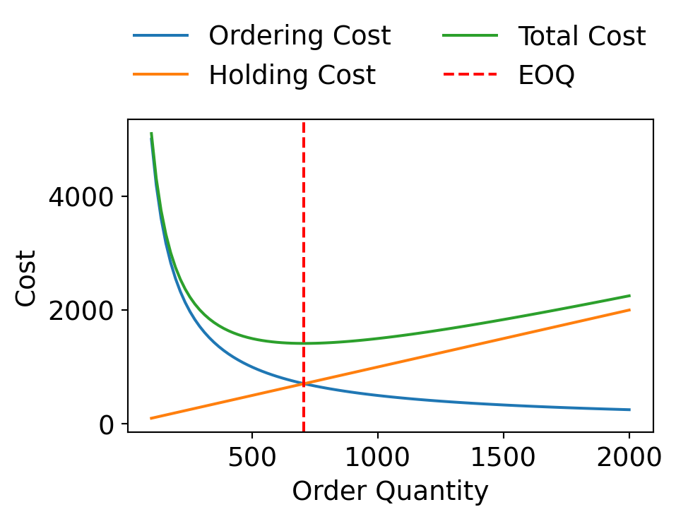
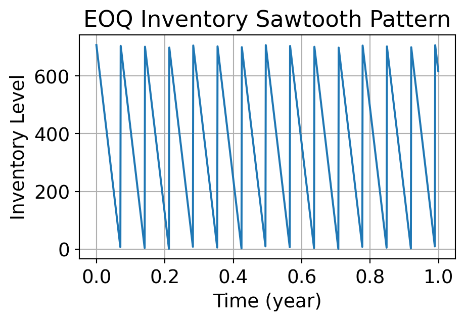
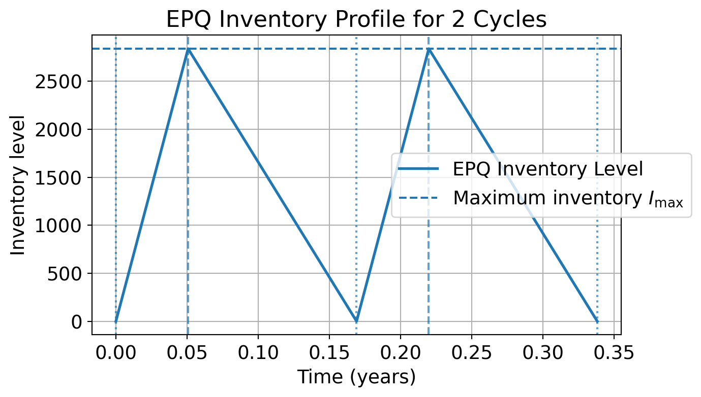

%%{init: {
"flowchart": {
"htmlLabels": true,
"padding": 5,
"nodeSpacing": 35,
"rankSpacing": 25
},
"theme": "base",
"themeVariables": {
"fontSize": "16px",
"secondaryColor": "#ffffff"
}
}}%%
flowchart LR
%% ---------------------------
%% Layer 1
%% ---------------------------
subgraph TOP[ ]
direction LR
MP([Manufacturing<br>Plant])
FW([WHs])
end
%% ---------------------------
%% Layer 2
%% ---------------------------
subgraph MID[ ]
direction LR
V([Vendors])
RMI["RMI"]
CPI["CPI"]
WIP["WIP"]
FGI["FGI"]
W([W/S])
R([RET])
end
%% ---------------------------
%% Layer 3
%% ---------------------------
subgraph BOT[ ]
direction LR
DC([DCs])
end
%% Main flow
V -->|Buying| RMI
V -->|Buying| CPI
RMI -->|Fabrication| CPI
CPI -->|Initial<br>Assembly| WIP
WIP -->|Final<br>Assembly| FGI
FGI --> FW
FGI --> DC
FW --> W
DC --> W
W --> R
%% Invisible alignment helpers
MP --> RMI
FW -.-> W
RMI -.-> DC
%% Styles
classDef inventory fill:#ffffff,stroke:#d33,stroke-width:2px,stroke-dasharray: 6 4;
classDef circle fill:#ffffff,stroke:#555,stroke-width:1.5px;
classDef invisible fill:none,stroke:none,color:none;
class RMI,CPI,WIP,FGI inventory;
class V,FW,DC,W,R circle;
class TOP,MID,BOT invisible;
style MP fill:#ffffff,stroke:#ffffff;
Topic 6: Inventory Model
05115130 Supply Chain Modelling and Optimisation
10 Jun 2026
Goals Today
- Introduction to inventory model
- Inventory metrics
- Inventory control objectives
- Inventory cost components
- Other variables
- Types of inventory model
- Economic order quantity (EOQ) model
- Economic production quantity (EPQ) model
- Reordering point and policy
1. Introduction
Inventory: The stock of any item or resource used in an organisation.
Inventory system: Policies and controls to monitor stock levels and reorder timing/quantity.
Types of Inventory
Direct
Directly contributes to the production of finished goods. These are physical items that are integrated into the final product or play an active role in the manufacturing process.
Examples: Raw materials, WIP, finished goods, spare parts.
Indirect
Inventory that does not become part of the final product but is necessary to support the production or business operations.
Examples: Maintenance, Repair, and Operations (MRO) supplies, office supplies, tools, and equipment.
Inventory Metrics
Average aggregate inventory value
\[ \boxed{\sum_{\text{all items}}(\text{Avg Units} \times \text{Cost per Unit})} \]
Weeks of Supply
\[ \boxed{\frac{\text{Avg aggregate inventory value}}{\text{the value of the sales per week}}} \]
Inventory Turnover
\[ \boxed{\frac{\text{Avg Weekly Cost of Goods Sold}}{\text{Avg aggregate inventory value}}} \]
The total average value of inventory held across all items, which helps track the financial investment tied up in inventory.
How long the avg inventory can support demand.
High value: overstocking or slow-moving inventory.
Low value: lean inventory or potential stockouts.
The number of times inventory is sold and replaced in a year, indicating how efficiently inventory is being used.
High turnover: implies faster sales or better inventory control.
Low turnover: could signal overstocking, obsolete items, or slow sales.
1.2 Objectives of Inventory Management
An inventory model is a mathematical or analytical framework used by businesses to determine how much inventory to order, when to order it, and how to manage stock efficiently.
The main goal is to balance costs and service levels—ensuring that products are available when needed while minimising expenses associated with ordering and holding inventory.
Important
At its core, inventory management deals with three key questions:
- How much to order?
- When to order?
- How to minimise total cost?
1.3 Inventory Cost Components
Inventory models help answer these questions by considering various cost components, such as
| Component | Description |
|---|---|
| Purchase Cost (PC) | The amount paid to acquire inventory. |
| Inventory Holding Cost (IHC) | The cost of storing and maintaining inventory over time, including storage, insurance, depreciation, and capital. |
| Shortage Cost (SC) | The cost incurred when demand cannot be met due to stockouts, which includes lost sales and emergency orders. |
| Ordering Cost (OC) | The cost associated with placing an order or setting up a production batch. |
| Total Inventory Cost (TC) | With discount: \(TC = PC + IHC + SC + OC\); Without discount: \(TC = IHC + SC + OC\) |
Objective: Determine the correct quantity to order that minimises the total cost.
1.4 Other Variables
Apart from costs, there are other variables which play an important role in decision-making,
| Variable | Description |
|---|---|
| Planning Horizon | The period over which a particular inventory level will be maintained. |
| Demand | The quantity of inventory required to meet customer needs, which can be deterministic or probabilistic. |
| Lead-time | The time between placing an order and receiving it, which can be deterministic or probabilistic. |
| Cycle-time (T) | The time between placements of two orders. |
- Deterministic: The exact quantity and timing are predictable and do not vary over time.
- Probabilistic: Uncertain and described using probability distributions.
1.5 Types of Inventory Models
More advanced models incorporate uncertainties in demand and lead time, such as probabilistic models, while others handle real-world complexities like bulk discounts or perishable goods.
- Inventory models can be broadly classified into:
Deterministic models
assume demand and lead time are known and constant
Stochastic models
account for uncertainty and variability in demand or supply
- Also, resupply strategies can be classified into:
Push System
Inventory is produced or ordered based on forecasted demand and pushed through the supply chain.
Pull System
Inventory is produced or ordered in response to actual demand, pulling products through the supply chain.
1.6 Multi-echelon Inventory Systems
Inventory is represented by red-dashed rectangles, while entities (e.g. vendors, warehouses) are represented by circles.
1.7 Analytical Tools for Inventory Management
EOQ and EPQ Models
Economic Order Quantity and Economic Production Quantity models are fundamental tools for determining optimal order quantities that minimise total inventory costs.
Optimisation Models
Optimisation models are used to determine the best order quantities and inventory policies that minimise costs or maximise service levels under various constraints.
Monte Carlo Simulation
A computational technique that uses random sampling to estimate the probability distribution of outcomes for complex inventory systems.
Newsvendor Model
The Newsvendor model is used to determine optimal order quantities for products with uncertain demand and a limited selling period.
2. Economic Order Quantity (EOQ) Model
For a single-stocking point, single-commodity inventory system with constant demand and lead time (deterministic), the parameters are as follows:
| Notation | Unit | Description |
|---|---|---|
| \(C\) | $/unit | Purchase or manufacturing cost of an item |
| \(A\) | $/order | The ordering cost per order |
| \(h\) | $/unit/time | Inventory holding cost of an item per unit per time unit |
| \(k\) | $/unit/time | Shortage cost per unit short per time |
| \(D\) | units/time | Demand rate of per planning horizon, usually per year |
| \(S\) | units | Shortage quantity, a decision variable |
| \(Q\) | units | Order quantity, a decision variable |
| \(T\) | Time | Cycle time (time between orders), a decision variable |
| \(R\) | units | Reorder level (inventory level at which an order is placed) |
| \(L\) | Time | Lead time |
2.1 Inventory Order Cycle in the Basic EOQ Model

2.2 EOQ Model – Formula
Order Quantity
\[ \boxed{Q = D \times T} \]
Demand rate multiplied by cycle time. Make sure that the units for demand rate and cycle time are consistent.
Ordering Cost
\[ \boxed{OC = \frac{D}{Q} \cdot A} \]
\(D/Q\) is the number of orders placed during the planning horizon.
\(A\) is the ordering cost per order.
Inventory Holding Cost
\[ \boxed{IHC = \frac{Q}{2} \cdot h} \]
Average cycle inventory multiplied by holding cost per unit (\(h\)).
Total Inventory Cost
\[ TC = OC + IHC \] \[ \boxed{TC = \frac{D}{Q} \cdot A + \frac{Q}{2} \cdot h} \]
- How to minimise \(TC\)?
From the \(TC\) formula, determine the order quantity \(Q^*\) that minimises it.
Setting the first derivative of \(TC\) with respect to \(Q\) to zero and solving for \(Q\): \[ \frac{d}{dQ}TC = -\frac{D}{Q^2}A + \frac{h}{2} = 0 \implies \boxed{Q^* = \sqrt{\frac{2DA}{h}}}, \] where \(Q^*\) is the optimal order quantity or optimal lot size.
The minimum total cost is obtained by substituting \(Q^*\) back into \(TC\): \[ TC(Q^*) = \frac{D}{Q^*} \cdot A + \frac{Q^*}{2} \cdot h \implies \boxed{TC(Q^*) = \sqrt{2DAh}} \]
If quantity discount is taken into account, then: \[ \boxed{TC = CD + \frac{D}{Q^*} \cdot A + \frac{Q^*}{2} \cdot h} \]
How often should an order be placed to maintain inventory efficiently?
Cycle Time
\[ \boxed{T = \frac{Q^*}{D}} \]
The time interval between placing two consecutive orders, in years, months, or days depending on units.
Order Frequency
\[ \boxed{\text{Order Frequency} = \frac{D}{Q^*}} \]
Number of orders placed per planning horizon, in years, months, or days depending on units.
2.3 EOQ Cost Trade-Off
Let’s visualise the cost trade-off between ordering cost and holding cost, and how EOQ minimises total inventory cost. In this example, we will use the following parameters: \(D = 10000\), \(A = 50\), \(h = 2\).

At EOQ, Ordering Cost = Holding Cost
EOQ minimises total inventory cost
EOQ (Q*): 707.11 units
Cycle time (T): 0.0707 years
- Large \(D\) → larger order quantity
- High \(A\) → order less frequently (larger \(Q\))
- High \(h\) → smaller order quantity
2.4 Sensitivity of the Lot-Size Model
Examines how changes in the order quantity from the optimal EOQ value affect the total cost.
It helps determine how critical it is to order exactly the EOQ, or whether near-optimal values are acceptable.
Why is it important?

- We might not always order exactly EOQ due to supplier constraints, quantity discounts, or packaging sizes.
- The total cost curve is relatively flat near EOQ, so minor deviations in order size result in minimal cost changes.
If the optimal lot size \(Q^* = EOQ\), and
\[ Q_1 = bQ^*, \quad b > 0 \]
where \(b\) is a multiplier, e.g. 0.8 or 1.2.
Then, the sensitivity ratio is:
\[ \boxed{\frac{TC(Q_1)}{TC(Q^*)} = \frac{1 + b^2}{2b}} \]
Example 1: Deviate from EOQ by 20%, i.e. \(b = 1.2\).
\[ \frac{TC(Q_1)}{TC(Q^*)} = \frac{1 + 1.44}{2.4} = \frac{2.44}{2.4} \approx 1.017 \]
This means total cost increases by only 1.7%.
If you cannot order at EOQ, small changes will not significantly impact cost.
Example 2: Determine the optimal lot size and the total variable cost associated with the policy of ordering quantities of that size.
Annual demand of 20,000 units, ordering cost of $150 per order, and annual inventory carrying cost is $0.24 per unit.
\[ Q^* = \sqrt{\frac{2DA}{h}} = \sqrt{\frac{2(20,000)(150)}{0.24}} = 5,000 \text{ units} \]
\[ TC(Q^*) = \frac{D}{Q^*} \cdot A + \frac{Q^*}{2} \cdot h \]
\[ TC(Q^*) = \frac{20,000}{5,000} \cdot 150 + \frac{5,000}{2} \cdot 0.24 = \$1,200 \]
- Alternatively,
\[ TC(Q^*) = \sqrt{2DAh} = \sqrt{2(20,000)(150)(0.24)} = \$1,200 \]
Example 3: A company uses rivets at a rate of 5,000 kg per year, with rivets costing $2 per kg. It costs $20 to place an order and the carrying cost of inventory is 10% per annum. How frequently should orders for rivets be placed and how much?
From the question, we have:
- \(D = 5,000\) kg/year
- \(C = \$2\) per kg
- \(A = \$20\) per order
- \(h = C \times 10\% = 0.2\)/unit/year
\[ Q^* = \sqrt{\frac{2DA}{h}} = \sqrt{\frac{2(5,000)(20)}{0.2}} = 1,000 \text{ kg} \]
\[ T = \frac{Q^*}{D} = \frac{1,000}{5,000} = 0.2 \text{ years} = 2.4 \text{ months} \]
Example 4: A supplier ships 100 units of a product every Monday. The purchase cost of product is $60 per unit. The cost of ordering and transportation from the supplier is $150 per order. The cost of carrying inventory is estimated at 15% per year of the purchase cost. Find the lot-size that will minimise the cost of the system. Also determine the optimum inventory cost.
From the question, we have:
- \(D = 100\) units/week \(= 100(52) = 5,200\) units/year
- \(C = \$60\) per unit, \(A = \$150\) per order
- \(h = C \times 15\% = \$9\) per unit per year
\[ Q^* = \sqrt{\frac{2DA}{h}} = \sqrt{\frac{2(5,200)(150)}{9}} = 416.3333 \]
Countable units must be ordered, so we need to round \(Q^*\) to the nearest whole number. Should we round up to 417 units or round down to 416 units?
Round up: Slightly more inventory, lower risk of shortage.
Round down: Preferred if strict space, riskier for stockouts.
Suppose we round down to 416 units, then the total cost is:
\[ TC(Q^*) = \frac{5,200}{416} \cdot 150 + \frac{416}{2} \cdot 9 = \$3,747.00 \]
If we round up to 417 units, then the total cost is:
\[ TC(Q^*) = \frac{5,200}{417} \cdot 150 + \frac{417}{2} \cdot 9 = \$3,747.0036 \]
The total cost is only slightly higher when rounding up (almost no different).
So, the choice of rounding up or down does not significantly impact the total cost, and either option can be considered acceptable based on other factors such as storage space or risk tolerance.
2.5 EOQ Model with Shortage Allowed

2.5.1 EOQ Model with Shortage Allowed - Formulas
Inventory Holding Cost
\[ \boxed{IHC = \frac{(Q^* - S)^2}{2Q^*} \cdot h} \]
Average inventory level multiplied by holding cost per unit \(h\).
Shortage Cost
\[ \boxed{SC = \frac{S^2}{2Q^*} \cdot k} \]
Average number of units short multiplied by shortage cost per unit \(k\).
Total Inventory Cost
\[ TC = OC + IHC + SC \]
\[ \boxed{TC = \frac{D}{Q^*} \cdot A + \frac{(Q^* - S)^2}{2Q^*} \cdot h + \frac{S^2}{2Q^*} \cdot k} \]
Setting the first derivative of \(TC\) with respect to \(Q^*\) and \(S\) to zero and solving for \(Q^*\) and \(S\), we have:
Optimal lot size
\[ \boxed{Q^* = \sqrt{\frac{2DA}{h}\frac{k+h}{k}}} \]
Optimal shortage quantity
\[ \boxed{S^* = Q^*\frac{h}{k+h}} \]
Optimal inventory level \(Q^* - S^*\)
\[ Q^* - Q^*\frac{h}{k+h} = \boxed{Q^*\frac{k}{k+h}} \]
Minimum total cost
\[ \boxed{TC^* = \sqrt{2DSAh\frac{k}{k+h}}} \]
Other formulas
- Cycle time \(T^* = Q^*/D\)
- Order frequency = \(D/Q^*\)
- Max inventory level = \(Q^* - S^*\)
- Avg inventory level = \((Q^* - S^*)/2\)
Example 5. The annual demand for a certain item is 3,000 units per period. Unsatisfied demand causes a shortage cost of $0.75 per unit per year. The cost of initiating purchasing action is $15.00 per purchase and the holding cost is 15% of average inventory valuation per period. Item cost is $8.00 per unit. Find purchase quantity and the minimum inventory cost.
Given:
- \(D = 3,000\) units
- \(C = \$8\) per unit
- \(k = \$0.75\) per unit per year
- \(h = \$8 \times 15\% = \$1.20\)
- \(A = \$15.00\) per order
\[ \begin{aligned} Q^* &= \sqrt{\frac{2DA}{h}\frac{k+h}{k}} \\ &= \sqrt{\frac{2(3000)(15)}{1.20}\frac{0.75 + 1.20}{0.75}} \\ &= 441.58 \approx 442 \end{aligned} \]
\[ \begin{aligned} TC^* &= \sqrt{2DAh\frac{k}{k+h}} \\ &= \sqrt{2(3000)(15)(1.20)\frac{0.75}{0.75 + 1.20}} \\ &= \$203.81 \end{aligned} \]
Example 6. A television manufacturing company produces its own speakers, which are used in the production of its television sets. The television sets are assembled on a continuous production line at a rate of 8,000 per month. The company is interested in determining when and how much to procure. Given.
- Each time a batch is produced, a set-up cost of $12,000 is incurred.
- The cost of keeping a speaker in stock is $0.30 per month.
- The production cost of a single speaker is $10.00 and can be assumed to be a unit cost.
- Shortage of a speaker, if it exists, costs $1.10 per month.
Given:
- \(D = 8000\) units per month
- \(A = \$12,000\) per batch
- \(h = \$0.3\) per unit per month
- \(k = \$1.10\) per month
- When shortages are not allowed:
\[ Q^* = \sqrt{\frac{2DA}{h}} = \sqrt{\frac{2(8000)(12000)}{0.3}} = 25,298 \text{ speakers} \]
\[ T = \frac{Q^*}{D} = \frac{25298}{8000} = 3.16 \text{ months} \]
- When shortages are allowed:
\[ Q^* = \sqrt{\frac{2DA}{h}\frac{k+h}{k}} = \sqrt{\frac{2(8000)(12000)}{0.3}\frac{1.10 + 0.3}{1.10}} = 28,540 \text{ speakers} \]
\[ T = \frac{Q^*}{D} = \frac{28540}{8000} = 3.57 \text{ months} \]
\[ \text{Optimal number of speakers stored} = Q^*\frac{k}{k+h} = 22,424 \text{ speakers} \]
A shortage of 28,540 - 22,424 = 6,116 speakers. Alternatively, \(S^* = Q^*\dfrac{h}{k+h} \approx 6,116.\)
3. Economic Production Quantity (EPQ) Model
The EPQ model extends EOQ to cases where replenishment is not instantaneous but occurs gradually over time, such as in manufacturing.

For production environments with production rate \(r\),
Cycle time
\[ \boxed{T = \frac{Q^*}{D} = T_r + T_d} \]
Replenishment time
\[ \boxed{T_r = \frac{Q^*}{r}} \]
Depletion time
\[ \boxed{T_d = \frac{Q^*}{D}\left(1 - \frac{D}{r}\right)} \]
Maximum Inventory Level
\[ \boxed{I_{max} = Q^*\left(1 - \frac{D}{r}\right)} \]
Inventory Holding Cost
\[ \boxed{IHC = \left(1 - \frac{D}{r}\right)\frac{Q^*}{2}h} \]
Total Inventory Cost \(\;TC = OC + IHC\)
\[ \boxed{TC = \frac{DA}{Q^*} + \left(1 - \frac{D}{r}\right)\frac{Q^*}{2}h}, \]
where \(A\) can also be interpreted as the setup cost per production run.
Setting the first derivative of \(TC\) with respect to \(Q^*\) to zero and solving for \(Q^*\):
Optimal lot size \[ \boxed{Q^* = \sqrt{\frac{2DA}{h}\frac{r}{r-D}} = \sqrt{\frac{2DA}{h(1-D/r)}}} \]
The term \(\frac{r}{r-D}\) accounts for the fact that production is not instantaneous but occurs gradually over time, which affects the average inventory level.
The minimum total cost is obtained by substituting \(Q^*\) back into \(TC\):
\[ \boxed{TC^* = \sqrt{2DAh\left(1 - \frac{D}{r}\right)}} \]
What if production rate \(r\) is very high, i.e. \(r \to \infty\)?
3.1 Sensitivity of the EPQ Model
\[ \boxed{TC^* = \sqrt{2DAh\left(1 - \frac{D}{r}\right)}} \]
- If \(r \to \infty\), then \(\displaystyle 1 - \frac{D}{r} \to 1 \implies Q^* = \sqrt{\frac{2DK}{h}}\) (reduces to EOQ).
Higher production rate \(r\) → faster replenishment → lower inventory buildup → lower holding cost
As \(r\) increases
EPQ approaches EOQ
If \(r\) is just above \(D\)
EPQ is much larger than EOQ due to high inventory buildup
Example 7. A product is to be manufactured on a machine. The cost, production, demand, etc. are as follows:
- Ordering cost/order = $30
- Purchase cost/unit = $0.10
- Inventory holding cost/unit/year = $0.05
- Production rate = 100,000 units/year
- Demand rate = 10,000 units/year
Determine the economic manufacturing quantity.
- \(A\) = $30/order
- \(C\) = $0.10/unit
- \(h\) = 0.05/unit/year
- \(r\) = 100,000 units/year
- \(d\) = 10,000 units/year
\[ Q^* = \sqrt{\frac{2DA}{h}\frac{r}{r-D}} \]
\[ = \sqrt{\frac{2(10,000)(30)}{0.05}\frac{100,000}{90,000}} = 3651 \text{ units} \]
Example 8. Golden Food distributes tinned foodstuff in Great Britain. In a warehouse located in Birmingham:
- The demand rate (\(D\)) for tomato purée is 400 pallets a month.
- The value of a pallet is \(C = 2500\) pounds and the annual interest rate \(I\) is 14.5%, including warehousing costs.
- Issuing an order costs \(A = 30\) pounds.
- Number of working days in a month equals 20.
- The replenishment rate (\(r\)) is 40 pallets per day.
- Shortages are not allowed.
Holding cost is calculated from the value of the pallet and the annual interest:
\[ h = 0.145 \times 2500 = 362.5 \text{ pounds per year per pallet} \]
\[ h = 30.2 \text{ pounds per month per pallet} \]
Unit must always be CONSISTENT.
We also need to convert the production rate \(r\) to pallets/month:
\[ r = 40 \text{ pallets/day} \times 20 \text{ days/month} = 800 \text{ pallets/month} \]
\[ Q^* = \sqrt{\frac{2 \times 30 \times 400}{30.2\left(1 - \frac{400}{800}\right)}} = 39.9 \approx 40 \text{ pallets} \]
The cycle time is:
\[ T^* = \frac{Q^*}{D} = \frac{40}{400} = \frac{1}{10}\text{ month} = 2 \text{ workdays} \]
The replenishment time is:
\[ T_r^* = \frac{Q^*}{r} = \frac{40}{40} = 1 \text{ workday} \]
Example 9. A beverage company produces its own cardboard packaging boxes for shipping bottled drinks to retailers. The boxes are consumed continuously by the filling and packing line.
The following data are given:
- Annual demand: \(D = 24{,}000\) boxes/year
- Production rate: \(r = 80{,}000\) boxes/year
- Demand rate: \(d = 24{,}000\) boxes/year
- Setup cost per production run: \(A = \$120\)
- Holding cost: \(h = \$0.50\) per box per year
Determine:
- The optimal production lot size \(Q^*\)
- The maximum inventory level
- The total annual relevant cost
- The optimal production lot size \(Q^*\) is calculated using the EPQ formula:
\[ Q^*=\sqrt{\frac{2DA}{h\left(1-\frac{D}{r}\right)}}=\sqrt{ \frac{2(24{,}000)(120)} {0.50\left(1-\frac{24{,}000}{80{,}000}\right)}}\approx 4057 \text{ boxes} \]
- The maximum inventory level is the optimal lot size adjusted for the production and demand rates:
\[ I_{\max}=Q^*\left(1-\frac{D}{r}\right)=4056.74(0.7)\approx 2840 \]
- The total annual relevant cost is:
\[ TC(Q^*) =\frac{D}{Q^*}A+h\frac{Q^*}{2}\left(1-\frac{D}{r}\right) =1419.86 \]
3.2 EPQ Simulation
Code
import numpy as np
import matplotlib.pyplot as plt
# -----------------------------
# EPQ parameters
# -----------------------------
D = 24000 # annual demand
p = 80000 # production rate per year
d = 24000 # demand rate per year
K = 120 # setup cost
h = 0.50 # holding cost
# -----------------------------
# EPQ calculations
# -----------------------------
Q = np.sqrt((2 * D * K) / (h * (1 - d / p))) # optimal production lot size
tp = Q / p # production time
T = Q / d # cycle length
Imax = Q * (1 - d / p) # maximum inventory
print(f"EPQ lot size Q* = {Q:.2f}")
print(f"Production time tp = {tp:.4f} years")
print(f"Cycle length T = {T:.4f} years")
print(f"Maximum inventory Imax = {Imax:.2f}")
# -----------------------------
# Build 2-cycle inventory curve
# -----------------------------
cycles = 2
points_per_segment = 200
time_vals = []
inventory_vals = []
for k in range(cycles):
cycle_start = k * T
# Segment 1: production period (inventory rises at rate p-d)
t_up = np.linspace(0, tp, points_per_segment)
i_up = (p - d) * t_up
# Segment 2: no-production period (inventory falls at rate d)
t_down = np.linspace(tp, T, points_per_segment)
i_down = Imax - d * (t_down - tp)
time_vals.extend(cycle_start + t_up)
inventory_vals.extend(i_up)
time_vals.extend(cycle_start + t_down)
inventory_vals.extend(i_down)
time_vals = np.array(time_vals)
inventory_vals = np.array(inventory_vals)
# -----------------------------
# Plot
# -----------------------------
plt.figure(figsize=(7, 4))
plt.plot(time_vals, inventory_vals, linewidth=2, label="EPQ Inventory Level")
plt.axhline(Imax, linestyle="--", label=r"Maximum inventory $I_{\max}$")
# Mark cycle boundaries
for k in range(cycles + 1):
plt.axvline(k * T, linestyle=":", alpha=0.7)
# Mark production stop times
for k in range(cycles):
plt.axvline(k * T + tp, linestyle="--", alpha=0.7)
plt.xlabel("Time (years)")
plt.ylabel("Inventory level")
plt.title("EPQ Inventory Profile for 2 Cycles")
plt.grid(True)
plt.legend(loc="center right", bbox_to_anchor=(1.15, 0.5))
plt.show()EPQ lot size Q* = 4056.74
Production time tp = 0.0507 years
Cycle length T = 0.1690 years
Maximum inventory Imax = 2839.72
4. Reorder Point & Policy
When should we place an order to replenish inventory?
- Order \(Q\) units when stock drops to reorder point \(R\).
Basic reorder level
\[ \boxed{R = D \times L} \]
represents the amount of stock needed to cover demand during the lead time.
This is used when:
- Lead time (\(L\)) is shorter than or equal to the cycle time \(T\).
- There is only one order in progress at any time.
Adjusted Reorder Point
\[ \boxed{R = D \times L - n \times Q^*} \]
\(n \times Q^*\) is demand that will be covered by previous orders already placed.
This is used when:
- \(L > T\), i.e. multiple orders may be in flight during the lead time.
- \(n\) is the number of orders that will arrive during the lead time, \(\lfloor L/T \rfloor\).
Example 9. Suppose we have a demand of 100 units/week and a lead time of 2 weeks. When should we place an order to replenish inventory assuming that the lead time is shorter than the cycle time?
\[ R = 100 \times 2 = 200 \text{ units} \]
Place an order when stock falls to 200 units.
Example 10. Suppose we have a demand of 100 units/week, a lead time of 3 weeks, and an EOQ of 250 units. When should we place an order to replenish inventory?
\[ T = \frac{Q^*}{D} = \frac{250}{100} = 2.5 \text{ weeks} \]
- Lead time, 3 weeks, is between \(1T\) and \(2T\), so \(n = 1\).
\[ R = D \times L - n \times Q^* = 100 \times 3 - 1 \times 250 = 50 \text{ units} \]
Wait until stock falls to 50 units, because 250 units are already on the way, and then place another order for 250 units.